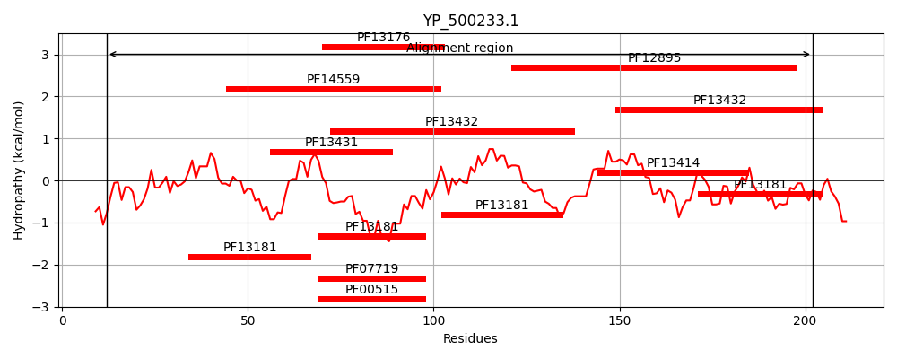
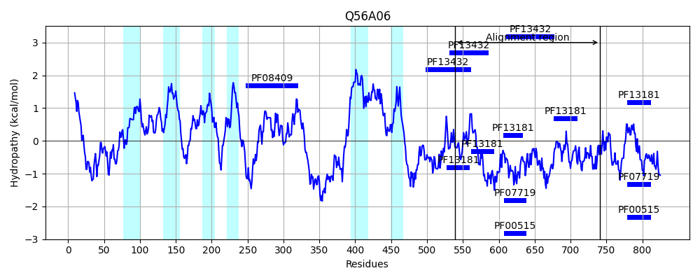
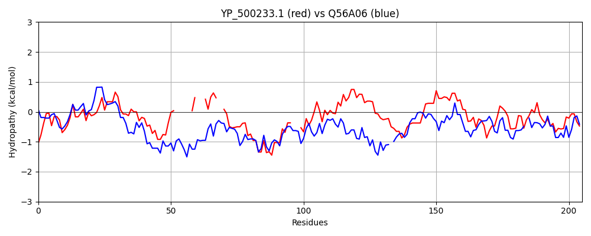

Hit Accession: Q56A06
Hit TCID: 8.A.95.1.3
Hit Description: gnl|BL_ORD_ID|14158 gnl|TC-DB|Q56A06|8.A.95.1.3 Transmembrane and TPR repeat-containing protein 2 OS=Mus musculus GN=Tmtc2 PE=2 SV=1
Mach Len: 205
e:0.000000
Query TMS Count : 0
Hit TMS Count: 6
TMS-Overlap Score: 0.000000
Predicted Substrates:None
BLAST Alignment:
Score: 137 , Bit scores: 57 bits, E-value: 1.0e-09, Alignment length: 205, Percentage identity: 26
Query: 12 QNGKIEEALQALFGNIEENPTIIENYINAGIVLADANEIEKAERFFQKALTI------DP---KNGVV--FFNLANVYYNQQRYQEAIKLYQQALQ---TEIEQVDCNYMIGMAFNQLESFKLALPYLMTAAELDKDKDAEVQFQYGLVLCQLEMFNEAITQLKHVLTIDKNHVDARYNLGLALFMKNEDIDEAITHFKEAVTID 202
+N + EAL I PT+ Y+N GI+L + + E+A R F K I DP K+ V +NL +Y+ Q RY+EA+ +Y++A+Q M+G A+ +L A + M + K YG +L +EA + +D + + G L ++ + EA K+A +D
Sbjct: 539 ENSRFAEALHYYKLAIGSRPTLASAYLNTGIILMNQGKTEEARRTFLKCSEIPDENLKDPHAHKSSVTSCLYNLGKLYHEQGRYEEALSVYREAIQKMPRHFAPQSLYNMMGEAYMRLSKLPEAEHWYMESLR-SKTDHIPAHLTYGKLLALTGRKSEAEKFFLKAIELDPTKGNCYMHYGQFL-LEESRLTEAAEMAKKAAELD 741 | Protein Hydropathy Plots: |
|---|
|  |  |
Pairwise Alignment-Hydropathy Plot:
|
|---|
|  |